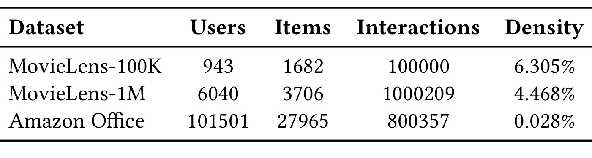
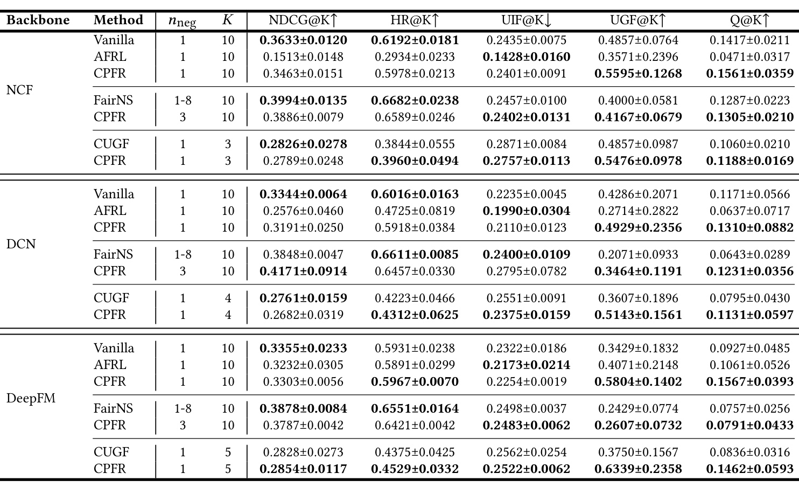
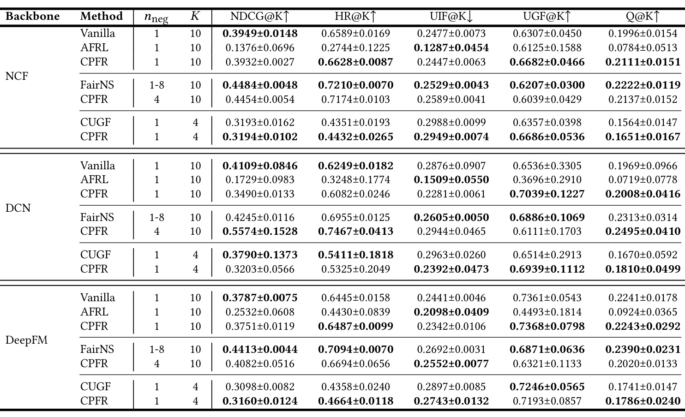
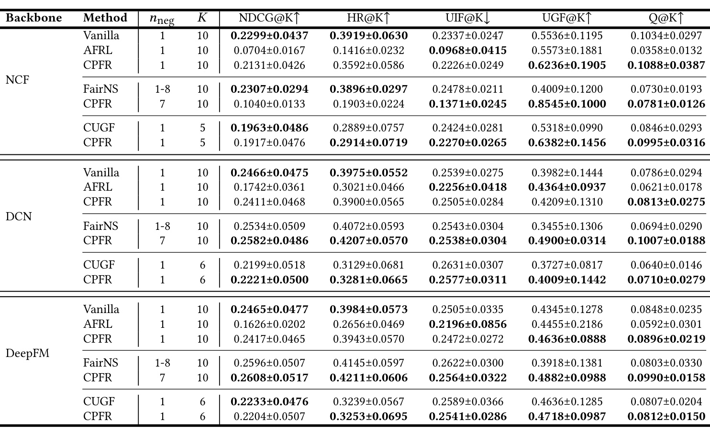
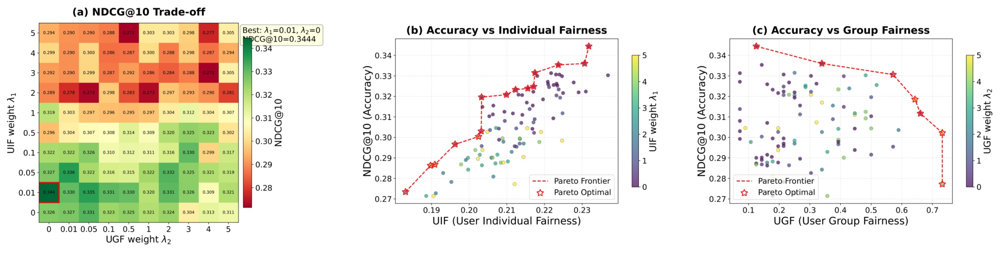
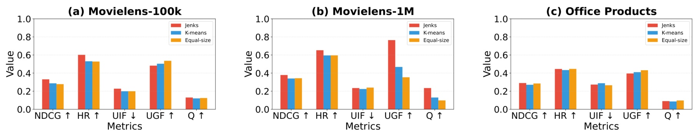
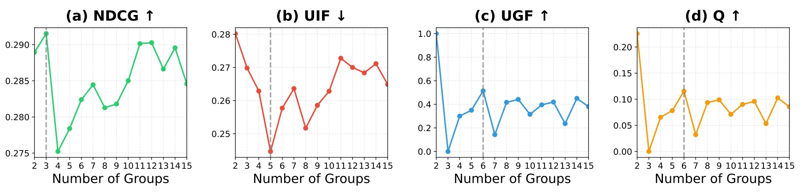

上海财经大学-CPFR：让推荐表现与训练贡献相匹配
CPFR 研究用户贡献与推荐收益之间的关系：用户不仅接收推荐，也用交互数据参与训练。作者提出按训练贡献代理形成有序分组，再同时约束组间表现顺序和组内表现差异。论文 Aligning Performance with Contribution: Towards Contribution-Aware Fair Recommendation 由上海财经大学的 Shuai Zhang、Hui Fang，以及新加坡科技设计大学的 Zhu Sun 共同完成，2026年10月6日首次公开于 arXiv，属于推荐算法中的贡献公平与多目标训练方向。
论文入口为 arXiv:2610.08245，本轮未核验到独立官方代码或项目入口。首页的 Conference’17 与 2027 模板占位文字不能作为确认会议或发表年份的依据。本文围绕贡献代理、分组目标、多目标优化、实验反例和激励理论的适用范围展开，阅读时应同时关注准确率与公平的变化。
用户对模型学习的贡献不可直接观测，需要从交互与训练动态建立多维、有序的代理；贡献分组形成后，推荐准确率、跨组贡献与收益的顺序一致性、组内用户待遇相近这三个目标可能互相冲突，需要在训练中共同优化。贡献代理不能解释成用户内在价值，排序约束也不等于已经验证的长期参与激励。
1. 背景和问题
推荐系统的用户同时处于两个位置。一方面，他消费系统产生的排序，希望得到相关电影、商品或内容；另一方面，他的点击、评分和购买组成训练数据，帮助系统学习偏好及物品关系。常规准确率优化主要关心预测是否正确，用户公平研究则进一步比较不同用户、不同人口群体或不同活跃度群体的收益分布。这篇论文把注意力放在一个较少直接表达的问题上：不同用户提供的数据对特定模型的训练作用并不相同，系统给予他们的推荐表现是否与这种训练贡献保持某种一致关系？作者不是提出一个新的推荐骨干，而是为已有骨干增加用户分层与训练约束。
这一问题与“对所有人给出一样好的推荐”存在价值取向差异。作者担心严格的结果齐平可能通过降低高贡献用户的收益来压缩差异，让他们缺少继续贡献高质量信息的动力。在理想情形下，用户愿意持续反馈，额外反馈改善模型，贡献与收益建立联系可能形成良性循环。但这只是提出新公平视角的动机，真实平台上不能从一段历史交互量推断一个人的意愿，更不能默认数据多的人就应当得到全部资源。低活跃度可能来自冷启动、时间限制、访问障碍或隐私偏好，反馈也可能因界面和已有推荐机会而受到限制。作者在引言明确承认这些情况，强调贡献公平应与既有公平保护并存，并提出合理服务质量底线的重要性。
论文中的贡献因此必须读作“给定训练过程里的可操作代理”。它依赖选定模型、损失函数和历史数据，以交互量、负平均训练损失、平均单样本梯度范数三个分量表示。换一个骨干，用户的损失与梯度会变化；换一个训练阶段，模型理解用户行为的程度也会变化。一个用户得到高代理分数，并不代表删除其数据会造成相同幅度的性能下降，更不代表他对整个生态的价值更高。论文讨论 Data Shapley 和影响函数作为相关研究背景，但没有真正用这些方法估计每个用户的边际因果贡献。读者若把“贡献”理解为经过反事实检验的数据价值，将会高估这项工作证明的内容。
三个代理还含有内在张力。交互量衡量数据规模，负损失倾向于奖励容易被当前模型解释的互动，梯度范数则体现互动给模型带来的更新强度。一个容易拟合的用户可能损失低却梯度小，一个偏好独特的用户可能产生大梯度也产生大损失。等权融合把这些差异压成单一得分，给出了一个便于分组的顺序，但没有消除各分量的价值冲突。尤其低损失不等于干净标签，大梯度不等于有益更新，模型对主流偏好更熟悉也可能造成贡献排序偏向已有强势群体。论文采用这些信号有训练动态方面的启发依据，仍需要独立检验代理与真实学习收益的一致性。
贡献分组之后，作者提出两种公平要求。跨组方面，平均贡献较高的组应当拥有不低于平均贡献较低组的推荐表现；组内方面，贡献相近的用户应该拥有尽可能接近的表现。前者只要求单调关系，没有要求收益严格按贡献比例分配，也没有规定每单位贡献的回报；后者在具体实现里用组内离散程度刻画，而不是任意两个相似用户之间的个体公平。由此可见，论文并非处理一般意义上的全部公平问题。人口群体公平、物品曝光公平、创作者收益公平、隐私代价等都不在这两个损失的直接定义中，不能由较高综合指标自动推出。
这个视角的技术困难首先在于怎样构造稳定的离散群体。得分的尾部可能很长，如果采用固定区间，有些组人数极少；如果采用等人数分组，又可能把贡献差异很大的用户划到同一组。组数也会改变统计意义：两个组的顺序关系过于简单，很多组则容易产生小样本噪声。作者采用 Jenks 自然断点，使分组适应经验得分分布，但这种选择带来人数不均衡。因此公平损失的归一化、组均值估计以及批次中某组是否有足够用户，都成为实际优化中的关键条件。
第二个困难是训练目标与评估目标不相同。推荐收益用 NDCG 或 HR 衡量，它们由离散排序和命中产生；训练时则使用可微的二元交叉熵及其分散度。让高贡献组 BCE 更低，并不保证其测试 NDCG 总会更高；让组内 BCE 接近，也不保证所有成员的测试排序收益接近。作者的公平正则是对目标的代理实现，价值在于能接入标准训练流程，局限在于这种代理映射必须依赖实验验证。训练指标漂亮但测试排序异常的结果，恰恰是检查这层映射的重要证据。
还需要区分“总量表现”和“分配结构”。某模型可能让所有人都获得较低准确率，却建立很整齐的贡献排序；另一个模型可能准确率更高，贡献排序却不稳定。作者用综合指标把这两类结果并置，但它带有明确的标量化选择，不能替代独立的用户效用检查。本文因此同时保留准确率、组间指标、组内指标和综合指标，并对作者概括中的不成立实例单独说明。研究问题值得讨论，结论成立的范围应由数据而非概念吸引力决定。
在用户可以自主选择反馈的场景里，还要考虑贡献与机会之间的循环：更好的推荐可能先让用户产生更多互动，更多互动又提高其贡献代理，系统继而给予更好待遇。因此观察到贡献与收益同向，并不足以说明“按贡献奖励”是一条独立的因果机制。论文没有控制这个反馈循环，也没有比较相同机会下的潜在贡献。合理的问题表述应把代理分层、训练干预、推荐效果与参与行为分别看待，让每一层都可以被新的证据反驳或支持。
2. 方法
2.1 训练依赖的贡献代理
贡献是训练条件下的代理，必须与用户内在价值分开。 CPFR 先在训练交互上训练一个不带公平约束的基础推荐器。原文第三节定义的模型条件贡献，来自常规训练早期采集的信号，并通过多次运行的平均提高稳定性。交互数量取用户互动集合的规模，损失对齐取平均训练 BCE 的负值，优化强度取平均单样本梯度的二范数。负号的意义是将“较低损失”转换为“较高对齐”，这样三个维度都能沿着越大越高的方向融合。梯度必须针对同一模型参数空间计算，不能把不同模型或不同参数化产生的范数直接当作可比较的贡献尺度。
符号解释：这里用户为 $u$，$\mathcal I_u$ 是其训练互动集合，$\ell$ 为单互动 BCE，$\Theta$ 是基础推荐器参数。三个量分别对应信息量、当前模型对信号的拟合程度和更新强度。它们不是独立因果效应，特别是梯度大可能由噪声或参数尺度造成；需要结合其他分量与后续效果来理解。
符号解释：这里横线表示在全体用户之间进行 z-score 标准化，$C_u$ 为最终个人贡献代理，三个 $w$ 是凸组合权重；这对应原文式二。标准化避免交互数的原始量纲压过另外两个分量，等权表达作者默认不偏好其中一个维度。标准化后得分可以为负，所以得分差不能直接解释成贡献份额；方法主要使用它产生的顺序和群体，而非将数值作为绝对可分配资源。
复现时最需要核实的是采集窗口、梯度参数范围和负样本来源。原文说明早期训练及多次运行，但公开文本没有提供足够详细的逐步采集实现。若只计算用户嵌入梯度，得到的信号与全模型参数梯度不同；若负采样比例变化，BCE 和梯度的分布也可能变化。笔记不替作者补出不存在的实现约定。工程迁移前应记录这些选择，并检验代理排序在随机种子、骨干和时间切分上的稳定性，否则所谓公平约束可能主要优化了某一次训练的偶然排序。
2.2 Jenks 自然断点与有序贡献分层
基础模型提供每个用户的单一贡献得分后，作者用 Jenks Natural Breaks 将用户划成若干互不重叠的组。算法沿一维得分寻找经验断点，目标是降低组内贡献方差、扩大组间分离，让同组用户在代理层面更加相近。它不是人口属性聚类，也不是按测试表现分组；分组依据应始终停留在训练数据一侧，以免测试收益参与确定公平目标。原文强调自然断点由数据分布决定，因此各组人数可能不同，不能默认每组拥有同等数量用户。
组贡献和组表现都取成员的均值，随后按平均贡献从高到低排序。这个顺序使后面的跨组约束只需检查相邻组，而不必对所有组对分别建约束：所有相邻关系满足时，整个链上的顺序也满足。不过这里的前提是组序稳定并且均值估计可靠；小组受到少数极端成员影响更大。论文在组数分析中提到合并小组，使设置的组数与实际组数不一致。给训练损失或离线指标传入组标识时，应保留最终实际分组，不能只记录一个预设超参数而忽略合并结果。
对用户公平而言，分组具有双重作用。一方面，它降低了直接做用户两两比较的复杂度，也让训练目标能够使用群体统计；另一方面，它决定哪些用户被视为贡献相近，从而规定组内公平评价的适用范围。若断点稍微改变，临界用户可能从一个组移动到另一个组，组均值、组内离散和 Spearman 排名都会改变。因此同样的推荐结果，在不同分组下可能得到不同公平评价。一个严谨实验应同时报告共同固定分组下的比较及不同分组自身带来的敏感性，避免把评价坐标变化误判为推荐算法本身改善。
2.3 组内离散与跨组单调：两个可微公平目标
组内要求通过用户平均训练损失之间的差异实现。每个用户在当前批次拥有一个平均 BCE，属于同一贡献组的任意无序用户对，其损失差被平方后累加。原文式八写成按组人数归一化，而不是对全部配对数量作单一全局除法。原因是大组配对数按人数平方增长，若采用全局配对归一化，小组的贡献容易被大组压低；每组除以人数后，权重对组规模的依赖大约转为线性，仍不是让各组影响完全相等。
符号解释：这里 $J$ 为组数，$G_j$ 为第 $j$ 组，$n_j$ 为其用户数，$\bar\ell_u$ 是用户在当前批次的平均 BCE。这个损失惩罚同贡献组内的训练难度差异，是组内收益相近的可微代理。全数据形式在小批次中用批次统计估计；某组只有一个用户时配对集合为空，原文没有展开空组处理的具体实现。
跨组约束使用相邻贡献组的损失差。假设贡献从第一组到最后一组递减，如果较高贡献组平均 BCE 反而更大，就产生正惩罚；若它不大于低贡献组，则该相邻项为零。因此约束鼓励高贡献组平均损失更低或相同，而不会奖励无限扩大已经正确的组间差距。
符号解释：这里 $\bar\ell_{G_j}$ 是第 $j$ 组平均训练损失，$C_{G_j}$ 是组平均贡献。原文式九的正负方向与贡献递减的组序绑定：若把组序改成递增，损失差也必须反向。该项是单调性惩罚，不是严格比例公平，也没有明确的服务底线约束。只有它与推荐目标共同作用时，才能期望避免通过普遍恶化低组来实现形式上的排序。
评估指标与训练损失应分开。原文 UGF 是组表现与组贡献的 Spearman 排名相关，经线性变换映射到零到一；越高表示越一致。UIF 则是各组用户测试表现配对平方差的平均，越低越好。名字里的 Fairness 不意味着 UIF 数值越高越公平。它的分母与训练式八不同，不能拿训练损失值替代测试 UIF。
符号解释：这里 $M_u$ 是用户的测试 NDCG 或其他表现量，$M_{G_j}$ 是组均值，$\rho$ 为 Spearman 相关。分子仅遍历无序用户对，这里保留原文式六的分母，不擅自改成组合数。需注意原文表中 UIF 的量级与这个明示公式存在值得复核的问题：当单用户 NDCG 在零到一内时，配对平方差结构通常受到很强上界约束，表中数值有些接近或高于四分之一。没有官方代码时，不能确定是否实际用了不同归一化，这成为复現前必须澄清的指标口径问题。
符号解释：这里 $\bar M$ 是总体平均测试表现，$\mathcal U$ 是用户集合，$Q$ 对应式七。作者以乘法压缩三维结果，任一较弱维度都会压低总分；但它仍允许在相当范围内用更高 UGF 抵消准确率损失。这个指标是本文的操作性综合标准，不是跨研究社区已统一接受的公平效用函数。比较必须同时展示各分量，尤其当某组低效用被较高秩相关掩盖时。
2.4 MoCo 多目标优化与理想激励分析
最终训练把标准推荐 BCE、组内离散损失和跨组单调损失共同放入目标，用两个公平权重调节其影响。权重对应具体损失，不能把调整组内权重称为同时直接控制全部公平。多个目标可能在共享参数上产生冲突梯度，例如提高易拟合组的准确率可能扩大组内损失差，因此作者使用 MoCo 缓和方向干扰。这是引用已有多目标优化算法，论文没有提供新的 MoCo 更新公式，也不是对比学习中的同名框架。
符号解释：这里 $\mathcal L_{\mathrm{rec}}$ 为标准 BCE，$\lambda_1$ 与 $\lambda_2$ 是两项公平权重，式十描述整体目标。作者援引 MoCo 收敛到 Pareto 驻点的理论性质，但适用条件来自被引用算法的假设，不能把这一陈述理解为任意深度推荐训练的全局最优保证。驻点也不唯一决定业务上可接受的准确率、公平或最低服务质量，需要用独立评价与约束选择具体配置。
理论部分考虑同质用户自主选择非负真实贡献，系统总性能随总贡献增加而增长，但边际收益递减；个人成本严格凸。平均分配把系统表现均分，比例分配则让用户按其贡献份额领取表现收益。假设两种博弈都存在唯一正对称均衡，原文给出以下条件。
符号解释：这里 $N\ge2$ 为理论用户数，$c^*$ 为对称均衡个人贡献，$A$ 为总推荐表现函数，$\phi$ 为个人贡献成本函数，EP 是平均分配、CP 是比例分配。第二个条件比第一个多出一个正的边际激励项，使贡献同时提高系统总表现和个人份额。在凹收益、凸成本及唯一均衡的前提下，比例分配的均衡贡献更高，系统总表现也更高。 理论中的贡献可直接分配且非负，CPFR 的代理经过标准化可以为负；理论按个人贡献比例分配，CPFR 只做组层顺序约束。这是两者之间的重要距离。离线固定数据无法观察用户对政策的长期响应，实验也没有随机化在线贡献、参与成本或留存。因此定理提供动机，不能作为算法已经带来长期激励的证据。若高贡献来源于既有优待，按它继续奖励还可能固化机会差异，实务上应将质量底线和其他群体保护作为外部约束明确加入。
3. 实验结果
原文第五节设置四个研究问题：主结果中的综合质量比较、两项公平与准确率的权衡、分组策略的影响、组数超参数的影响。实验覆盖 MovieLens-100K、MovieLens-1M 和 Amazon Office，以及 NCF、DCN、DeepFM 三个骨干。作者用评分至少四分作为正样本，并描述过滤互动少于十次的用户。下面的原始数据表说明了规模和密度，但它与预处理描述并非完全对齐，不能直接当成最终训练数据统计。

Table 1 列出 MovieLens-100K 的 943 用户、1682 物品和十万互动，MovieLens-1M 的 6040 用户、3706 物品和 1000209 互动；Office 则有 101501 用户、27965 物品、800357 互动，密度仅 0.028%。Office 的平均互动约为每用户八次，低于正文声称的十次过滤门槛，说明表中统计可能是原始数据或口径与过滤后的集合不同。原文没有在这张表里澄清，复现需要索取预处理后的确切用户数和互动数，不能将这一疑点自行抹平。三数据集的密度差异很大，训练代理与贡献组是否同样稳定也不能只靠一组最佳指标判断。 统一评估采用留一法，每个用户验证和测试抽取一正样本加九十九负样本，其余互动进入训练。批次大小为 2048，学习率千分之一，嵌入维度 64，Adam 优化器，验证 NDCG@10 连续十轮不改善则早停。结果平均五个随机运行，并用验证 Q 选择各方法的最佳配置。这表明模型选择对所有方法使用同一综合目标，但也使结论依赖 Q 的具体偏好。五次均值与误差反映波动，原文没有提供对应显著性检验或所有种子的配对明细，因此笔记不把均值小幅优势称为统计显著。
不同基线使用不同训练负采样和列表长度。对 Vanilla 与 AFRL，用一正一训练负、测试十长列表；对 FairNS，它按组使用一到八个负样本，CPFR 取其平均负采样数向下取整，三个数据集分别出现三、四、七个负样本；对 CUGF，两方法按其平均可变列表长度向下取整得到 K。这是作者为方法特性设定的匹配方案，仍不能让所有行完全同口径。只应在每个匹配组内比较，不能跨行挑最大 Q，也不能将 K=4 的结果与 K=10 的结果直接声称为同一排序任务上的胜负。

Table 2 上，NCF 在标准一负样本十长列表条件下，CPFR 的 NDCG 为 0.3463，Vanilla 为 0.3633，约下降百分之四点七；UGF 从 0.4857 提高到 0.5595，Q 从 0.1417 提高到 0.1561。这是准确率略降而贡献排序指标上升的典型权衡。与 FairNS 对应的三负样本版本则 NDCG 为 0.3886，对方 0.3994，Q 只从 0.1287 到 0.1305，均值差很小且误差明显重叠。不能因为 Q 最后一列加粗就断言稳健改善，尤其组间秩相关只有小幅变化。 该表 DCN 与 FairNS 的匹配比较更能说明指标冲突：CPFR 的 NDCG 为 0.4171，高于 0.3848，Q 从 0.0643 到 0.1231；但 UIF 从 0.2400 升到 0.2795，HR 从 0.6611 降到 0.6457。综合分数高不表示每个维度都好，准确率中的 NDCG 与 HR 自身也不是同义指标。DeepFM 的标准条件则 NDCG 从 0.3355 到 0.3303，UGF 从 0.3429 到 0.5804，Q 从 0.0927 到 0.1567；与 CUGF 的五长列表比较，Q 从 0.0836 到 0.1462。这些结果支持在这个数据集上改善贡献对齐，但不支持“同时无代价提升所有公平与准确率”。

Table 3 的反例必须与正例同等交付。NCF 与 FairNS 的匹配比较中，CPFR 四负样本的 Q 为 0.2137，FairNS 为 0.2222，前者低约百分之三点八；其 UGF 为 0.6039 对 0.6207，UIF 为 0.2589 对 0.2529，均未取得期望方向优势。NDCG 为 0.4454 对 0.4484，虽然接近，但不足以改变综合指标的相对排名。DeepFM 更明显：CPFR 的 Q 为 0.2020，FairNS 为 0.2390，低约百分之十五点五；NDCG 为 0.4082 对 0.4413，低约百分之七点五，UGF 也从 0.6871 降到 0.6321。组内 UIF 的改善没有抵消其他维度的下降。 同表也有积极结果。NCF 标准条件下 NDCG 0.3932 接近 Vanilla 的 0.3949，Q 0.2111 高于 0.1996。DCN 与 FairNS 匹配的 CPFR NDCG 达 0.5574，对方 0.4245，Q 为 0.2495 对 0.2313；不过 NDCG 的误差达到 0.1528，说明均值旁边存在大波动，不能只提约三成提升而忽略不稳定性。标准 DCN 条件下 CPFR NDCG 0.3490 对 Vanilla 0.4109，保留率约百分之八十四点九，已经不是处处保留百分之九十准确率。实验结论应是不同骨干与匹配协议上存在不同权衡，并非一个统一的无损公平增益。

Table 4 最值得警惕的是 NCF 对 FairNS 的七负样本匹配条件。CPFR 的 NDCG 只有 0.1040，FairNS 为 0.2307，下降约百分之五十四点九；HR 为 0.1903 对 0.3896，也接近减半。与此同时 UGF 从 0.4009 提高到 0.8545，UIF 从 0.2478 降到 0.1371，Q 从 0.0730 提高到 0.0781。这个实例直观显示 Q 的取舍：系统能够因秩相关大幅改善而接受很严重的准确率损失。原文主结果概括“与 FairNS 的准确率差距控制在百分之三以内”，这一概括不能覆盖这行数据；笔记以表格证据为准，将它作为明显不成立的反例保留。 Office 上不同骨干呈现不同现象。DCN 的七负样本版本对 FairNS，NDCG 0.2582 对 0.2534，UGF 0.4900 对 0.3455，Q 0.1007 对 0.0694；DeepFM 对应 NDCG 0.2608 对 0.2596，Q 0.0990 对 0.0803。两者在平均准确率保持相近时得到贡献对齐改善，因此不能由 NCF 反例简单否定整项框架，也不能由两个正例忽略骨干敏感性。标准一负样本 NCF 的 NDCG 为 0.2131，对 Vanilla 0.2299，表现较温和；同名 CPFR 在训练负采样改变后发生明显变化，说明其优势需要依赖协议而非只依赖模型名字解释。
还有一个指标可复核性风险。UIF 明示定义是各组无序配对平方差除以人数乘人数减一。如果每个用户 NDCG 在零到一范围内，有限组的这个统计值受方差上界约束；对于足够大的组，其上界接近四分之一。主表出现例如 0.2949、0.2988 等数值，究竟来自非常小的组、不同的实际归一化还是指标实现差异，需要官方代码和组规模才能确认。这里不能在没有每组人数时直接断言作者算错，但也不能把口径完全一致当成已验证事实。Q 的复算通常还涉及先按运行计算再平均，不能直接用三列均值相乘认为应严格等于平均 Q。

Figure 1 使用 MovieLens100K 与 DeepFM，扫描两个权重各十个值，共一百个配置。热图的最高准确率在组内权重 0.01、跨组权重零，NDCG 为 0.3444；这说明最高纯准确率配置并不需要强跨组约束。中图横轴 UIF 越低越好，右图横轴 UGF 越高越好，纵轴都是 NDCG。红色星形表示本次扫描得到的 Pareto 前沿；向更公平一侧移动通常伴随准确率变化。这是特定数据、骨干和搜索范围的经验前沿，不能证明任何公平改善必然降低准确率，也不代表前沿外不存在更好的优化或代理。 从图中可见，同样公平权重对应的点分布并非简单线性规律，不能把两个旋钮当作稳定控制器。论文说较强公平设置会使准确率降低约百分之五到十，但热图部分点远低于峰值，搜索范围内存在更严重代价。复现最好报告可接受准确率下的最佳公平、可接受最低组质量下的最佳 Q，而不是只以综合分数选一个点。MoCo 可以缓和梯度冲突，却不会消除不同目标之间的实质价值取舍，这一图恰好提供了理解二者区别的证据。

Figure 2 把 Jenks、K-means 和等规模分组放在三个数据集上比较，分别呈现 NDCG、HR、UIF、UGF 和 Q。MovieLens1M 中自然断点的 UGF 与 Q 看起来优势明显；Office 的多项结果则接近，而且等规模分组的 UGF 柱比 Jenks 更高，不能将自然断点说成每个指标都最优。作者选择 Jenks 是因为一维断点可以确定性产生、避免随机初始化带来的不稳定，并希望在整体质量上取得好折中。这是对贡献划层的消融，没有证明三个代理的等权融合最优，也没有展示分别删除交互量、损失或梯度的效果。 图上五种指标用同一个纵轴，但其优化方向不同，UIF 越低越好。读图时若将所有更高柱子都当作优势，会得出相反结论。更深的限制是不同策略也改变评价分组，公平指标之间的差别可能部分来自统计坐标变化。论文没有在图中给出全部组规模及共同参考分组评估，研究者应在复现实验里增加该信息，特别观察高低贡献尾部用户是否因组边界移动而产生大幅待遇变化。

Figure 3 在 Office 与 DeepFM 上改变预设组数，从二到二十一，合并小组后实际组数为二到十五。双组时 UGF=1 是非常粗糙的排序结果，图注专门说明只作为参照，不用于最优分析。两个组只要顺序一致就能得到最大 Spearman 对齐，因此高数值不意味着细粒度用户公平。实际组数六时 Q 在非平凡设置里出现较好点，组内 UIF 的低点又在约五组，不同指标并不共享一个最优组数。更多组带来的结果存在起伏，不能用“分组越细越公平”的直觉解释。 四面板还提示应保留实际分组与样本规模。原文正文说主实验 Office 设定十五组，但这个扫描中最佳 Q 对应的实际组数与它不同；不同实验协议可以有不同选择，不能反过来用超参数图某点替换主表结果。组数较多时小组均值不稳定，组间排序指标对轻微扰动更敏感，批次中的缺组或单用户组也会影响损失估计。复现应同时检查群体人数、组排序稳定性、批次覆盖和每用户测试收益分布，这些比只复现最后一列更能判断公平机制是否真实有效。
4. 总结
CPFR 的贡献在于把“用户参与训练”和“用户享受推荐”放在同一个分配问题中，并给出能够接入常见骨干的具体训练实现。交互量、负平均损失、梯度范数组成训练条件下的贡献代理，自然断点将其转成有序群体；组内 BCE 离散惩罚和跨组相邻 hinge 惩罚约束用户待遇结构，再与标准推荐目标共同优化。这一实现链条清楚、模块相对轻量，也可以将准确率与两个公平方向作为独立维度考察。研究价值最强的部分是提出可检验的问题与可实施的代理目标，而不是宣称某一种用户价值排序具有普遍正当性。
对推荐算法研究，第一条启发是用户公平不必总以人口属性或活跃度二分为起点，但任何新分组依据都需要证明其有效性与稳定性。贡献代理不能因命名而获得因果含义，应与重训练删除、影响估计或可控的数据增量实验对照；如果代理主要反映模型熟悉程度，奖励它可能强化主流偏好。第二条启发是排序型组公平和组内离散型公平可以形成不同训练目标，收益结构应该分开记录。第三条启发是复合指标必须配合服务质量门槛：Office NCF 例子说明 Q 更高仍可能意味着很多用户拿到明显更差的推荐，业务接受这样的权衡需要明确而可检查的理由。
当前证据最主要的局限有三个层次。定义层面，贡献代理依赖模型和训练窗口，未检验真实边际价值，也没有直接约束保护群体或冷启动用户。优化层面，BCE 差异只是排序收益公平的代理，MoCo 理论驻点不能保证全部测试目标都改善。实验层面，三数据三骨干支持部分配置的综合权衡，却出现主文概括不能覆盖的反例，且五次误差不足以给小幅优势提供显著性结论。原始数据表与过滤描述、UIF 明示公式与表中量级、分组变更后的共同评价口径都值得进一步澄清。
后续最有信息价值的工作不是直接将论文正则加入大规模推荐训练，而是按成本从低到高逐层验证。先复现数据过滤与指标公式，保存每组人数和每运行分量，确认作者主表能否重现；再固定统一参考分组，测试代理权重、训练采集时期、骨干和随机种子对结果的敏感性；随后增加准确率下限、最低组质量和保护群体约束，比较有门槛的多目标方案。只有这些条件明确后，才有理由研究动态重估贡献、长期参与响应和在线反馈循环。在线观察需要随机化或其他可识别设计，不能把离线 Q 增益改写成用户会持续贡献更多高质量反馈。
阅读时最需要保留的判断是：CPFR 在若干设置上能以相近准确率换取更强贡献对齐，但这种优势并非所有配置成立，也不是全部公平概念的替代品。理论比例分配说明理想激励为何可能存在，算法的组序约束提供可操作近似，两者之间仍缺少实际行为验证。论文没有已核验的官方代码入口，本笔记因此将实现未说明处和口径疑点明确留作跟进，而不把推测当成事实。所有七幅截图均来自原始 PDF 的独立 Figure/Table 对象，实验解释按各自配对协议展开，便于后续按页码核验。